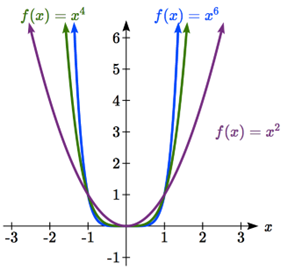
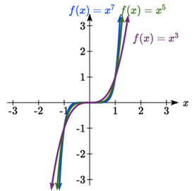
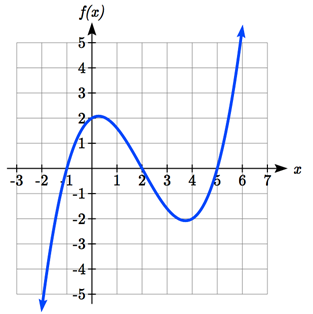

Suppose that a square is cut out of cardboard, with each side having length \(L\text{.}\) If we wanted to write a function for the area of the square, with \(L\) as the input and the area as output, you may recall that the area of a rectangle can be found by multiplying the length times the width. Since our shape is a square, the length and the width are the same, giving the formula: \(f(L)=A, f(L)=L\times L=L^{2}.\)
Likewise, if we wanted a function for the volume of a cube with each side having some length \(L\text{,}\) you may recall volume of a rectangular box can be found by multiplying length by width by height, which are all equal for a cube, giving the formula: \(g(L)=V, g(L)=L\times L\times L=L^{3}.\)
These two functions are examples of power functions, functions that are some power of the variable.
Definition3.1.1.Power Function.
A power function is a function that can be represented in the form \(f(x)=x^{p},\) where the base is a variable and the exponent, \(p\text{,}\) is a constant number.
Example3.1.2.
Which of our toolkit functions are power functions?
The constant and identity functions are power functions, since they can be written as \(f(x)=x^{0}\) and \(f(x)=x^{1}\) respectively.
The quadratic and cubic functions are both power functions with whole number powers: \(f(x)=x^{2}\) and \(f(x)=x^{3}\text{.}\)
The reciprocal and reciprocal squared functions are both power functions with negative whole number powers since they can be written as \(f(x)=x^{-1}\) and \(f(x)=x^{-2}\text{.}\)
The square and cube root functions are both power functions with fractional powers since they can be written as \(f(x)=x^{\frac{1}{2}}\) or \(f(x)=x^{\frac{1}{3}}\text{.}\)
Checkpoint3.1.3.
What point(s) do the toolkit power functions have in common?
Subsection3.1.2Characteristics of Power Functions
Shown below are the graphs of \(f(x)=x^{2}, f(x)=x^{4}, \text{ and }f(x)=x^{6}\text{,}\) all even whole number powers. Notice that all these graphs have a fairly similar shape, very similar to the quadratic toolkit, but as the power increases the graphs flatten somewhat near the origin, and become steeper away from the origin.

Figure3.1.4.Graphs of even powered power functions.
To describe the behavior as numbers become larger and larger, we use the idea of infinity. The symbol for positive infinity is \(\infty\text{,}\) and \(-\infty\) for negative infinity. When we say that “\(x\) approaches infinity”, which can be symbolically written as \(x\rightarrow \infty\text{,}\) we are describing a behavior. We are saying that \(x\) is getting large in the positive direction.
With the even power functions, as the \(x\) becomes large in either the positive or negative direction, the output values become very large positive numbers. Equivalently, we could describe this by saying that as \(x\) approaches positive or negative infinity, the \(f(x)\) values approach positive infinity. In symbolic form, we could write: as \(x\rightarrow \pm \infty, f(x)\rightarrow \infty\text{.}\)
Shown below are the graphs of \(f(x)=x^{3},f(x)=x^{5}\text{,}\) and \(f(x)=x^{7}\text{,}\) all odd whole number powers. Notice all these graphs look similar to the cubic toolkit, but again as the power increases the graphs flatten near the origin and become steeper away from the origin.

Figure3.1.5.Graphs of odd powered power functions.
For these odd power functions, as \(x\) approaches negative infinity, \(f(x)\) approaches negative infinity. As \(x\) approaches positive infinity, \(f(x)\) approaches positive infinity. In symbolic form we write: as \(x\rightarrow -\infty, f(x)\rightarrow -\infty\) and as \(x\rightarrow \infty, f(x)\rightarrow \infty\text{.}\)
Definition3.1.6.Long Run Behavior.
The behavior of the graph of a function as the input takes on large negative values,\(x\rightarrow -\infty\text{,}\) and large positive values, \(x\rightarrow \infty\text{,}\) is referred to as the long run behavior of the function.
Example3.1.7.
Describe the long run behavior of the graph of \(f(x)=x^{8}\text{.}\)
Since \(f(x)=x^{8}\) has a whole, even power, we would expect this function to behave somewhat like the quadratic function. As the input gets large positive or negative, we would expect the output to grow without bound in the positive direction. In symbolic form, as \(x\rightarrow \pm \infty, f(x)\rightarrow \infty\text{.}\)
Example3.1.8.
Describe the long run behavior of the graph of \(f(x)=-x^{9}.\)
Since this function has a whole odd power, we would expect it to behave somewhat like the cubic function. The negative in front of the \(x^{9}\) will cause a vertical reflection, so as the inputs grow large positive, the outputs will grow large in the negative direction, and as the inputs grow large negative, the outputs will grow large in the positive direction. In symbolic form, for the long run behavior we would write: as \(x\rightarrow \infty, f(x)\rightarrow-\infty\) and as \(x\rightarrow -\infty, f(x)\rightarrow\infty\text{.}\)
You may use words or symbols to describe the long run behavior of these functions.
Checkpoint3.1.9.
Describe in words and symbols the long run behavior of \(f(x)=-x^{4}.\)
Treatment of the rational and radical forms of power functions will be saved for later.
Subsection3.1.3Polynomials
An oil pipeline bursts in the Gulf of Mexico, causing an oil slick in a roughly circular shape. The slick is currently 24 miles in radius, but that radius is increasing by 8 miles each week. If we wanted to write a formula for the area covered by the oil slick, we could do so by composing two functions together. The first is a formula for the radius, \(r\text{,}\) of the spill, which depends on the number of weeks, \(w\text{,}\) that have passed.
Hopefully you recognized that this relationship is linear: \(f(w)=r, f(w)=24+8w\)
We can combine this with the formula for the area, \(A\text{,}\) of a circle: \(g(r)=A, g(r)=\pi r^{2}\)
Composing these functions gives a formula for the area in terms of weeks: \(g(f(w))=g(24+8w)=\pi(24+8w)^{2}\)
Multiplying this out gives the formula \(g(f(w))=576\pi+384\pi w+64\pi w^{2}\)
This formula is an example of a polynomial. A polynomial is simply the sum of terms each consisting of a vertically stretched or compressed power function with non-negative whole number power.
Definition3.1.10.Polynomial Function Terminology.
A polynomial is function that can be written as \(f(x)=a_{0}+a_{1} x+a_{2} x^{2}+⋯+a_{n} x^{n}\)
Each of the \(a_{i}\) constants are called coefficients and can be positive, negative, or zero, and be whole numbers, decimals, or fractions.
A term of the polynomial is any one piece of the sum, that is any \(a_{i} x^{i}\text{.}\) Each individual term is a transformed power function.
The degree of the polynomial is the highest power of the variable that occurs in the polynomial.
The leading term is the term containing the highest power of the variable: the term with the highest degree.
The leading coefficient is the coefficient of the leading term.
Because of the definition of the “leading” term we often rearrange polynomials so that the powers are descending. \(f(x)=a_{n} x^{n}+.....+a_{2} x^{2}+a_{1} x+a_{0}\)
Example3.1.11.
Identify the degree, leading term, and leading coefficient of these polynomials:
\(\displaystyle f(x)=3+2x^{2}-4x^{3}\)
\(\displaystyle g(t)=5t^{5}-2t^{3}+7t\)
\(\displaystyle h(p)=6p-p^{3}-2\)
For the function \(f(x)\text{,}\) the degree is 3, the highest power on \(x\text{.}\) The leading term is the term containing that power, \(-4x^{3}\text{.}\) The leading coefficient is the coefficient of that term, -4.
For \(g(t)\text{,}\) the degree is 5, the leading term is \(5t^{5}\text{,}\) and the leading coefficient is 5.
For \(h(p)\text{,}\) the degree is 3, the leading term is \(-p^{3}\text{,}\) so the leading coefficient is -1.
Subsection3.1.4Long and Short Run Behavior
Definition3.1.12.Long Run Behavior of Polynomials.
For any polynomial, the long run behavior of the polynomial will match the long run behavior of the leading term.
Example3.1.13.
What can we determine about the long run behavior and degree of the equation for the polynomial graphed here?

Since the output grows large and positive as the inputs grow large and positive, we describe the long run behavior symbolically by writing: as \(x\rightarrow \infty, f(x)\rightarrow \infty\text{.}\) Similarly, as \(x\rightarrow -\infty, f(x)\rightarrow-\infty\text{.}\)
In words, we could say that as \(x\) values approach infinity, the function values approach infinity, and as \(x\) values approach negative infinity the function values approach negative infinity.
We can tell this graph has the shape of an odd degree power function which has not been reflected, so the degree of the polynomial creating this graph must be odd, and the leading coefficient would be positive.
Checkpoint3.1.14.
Given the function \(f(x)=0.2(x-2)(x+1)(x-5)\) use your algebra skills to determine the leading term, degree, and long run behavior of the function.
Characteristics of the graph such as vertical and horizontal intercepts are part of the short run behavior of the polynomial.
Like with all functions, the vertical intercept is where the graph crosses the vertical axis, and occurs when the input value is zero. Since a polynomial is a function, there can only be one vertical intercept, which occurs at the point \((0,a_{0})\text{.}\) The horizontal intercepts occur at the input values that correspond with an output value of zero. It is possible to have more than one horizontal intercept.
Horizontal intercepts are also called zeros, or roots of the function.
Example3.1.15.
Given the polynomial function \(f(x)=(x-2)(x+1)(x-4)\text{,}\) written in factored form for your convenience, determine the vertical and horizontal intercepts.
The vertical intercept occurs when the input is zero. \(f(0)=(0-2)(0+1)(0-4)=8\text{.}\)
The graph crosses the vertical axis at the point \((0, 8)\text{.}\)
The horizontal intercepts occur when the output is zero. \(0=(x-2)(x+1)(x-4),\) which is true when \(x = 2, -1\text{,}\) or \(4\text{.}\)\(f(x)\) has zeros, or roots, \(at x = 2, -1\text{,}\) and \(4\text{.}\)
The graph crosses the horizontal axis at the points \((2, 0), (-1, 0)\text{,}\) and \((4, 0)\text{.}\)
Notice that the polynomial in the previous example, which would be degree three if multiplied out, had three horizontal intercepts.
Definition3.1.16.Intercepts of Polynomials.
A polynomial of degree \(n\) will have at most \(n\) horizontal intercepts.
Checkpoint3.1.17.
Given the function \(f(x)=0.2(x-2)(x+1)(x-5)\text{,}\) determine the roots and vertical intercept of the function \(f\text{.}\)
Subsection3.1.5Answers
Checkpoint3.1.18.
Answers to Checkpoint Exercises
Answer.
\((0, 0)\) and \((1, 1)\) are common to all power functions.
As \(x\) approaches positive and negative infinity, \(f(x)\) approaches negative infinity: \(as x\rightarrow \pm\infty, f(x)\rightarrow\infty\) because of the vertical flip.
The leading term is \(0.2x^{3}\text{,}\) so it is a degree 3 polynomial.
As \(x\) approaches infinity (or gets very large in the positive direction) \(f(x)\) approaches infinity; as \(x\) approaches negative infinity (or gets very large in the negative direction) \(f(x)\) approaches negative infinity. (Basically the long run behavior is the same as the cubic function).
Horizontal intercepts are \((2, 0), (-1, 0)\text{,}\) and \((5, 0)\text{,}\) and the vertical intercept is \((0, 2)\text{.}\)